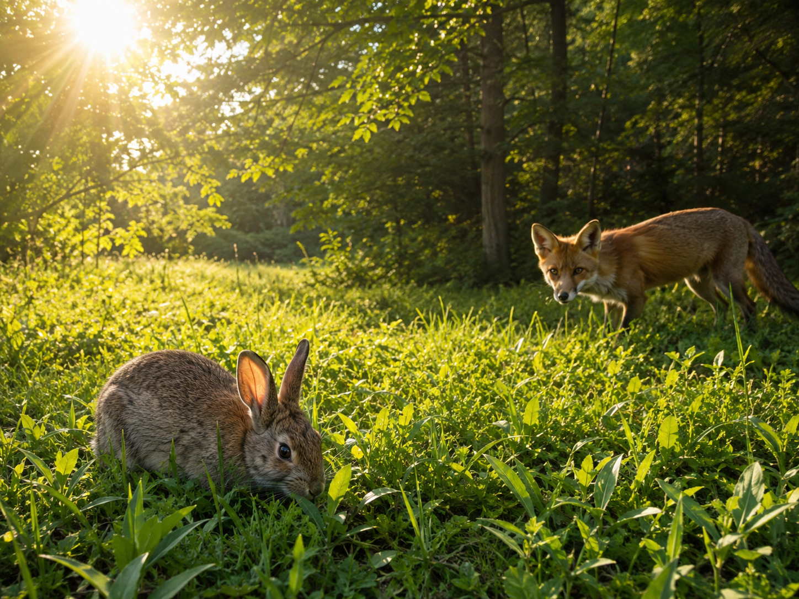

Hold this question in your mind as you work through the lesson. By the end, you should be able to answer it with evidence!
Look closely at the meadow photo at the top of the next section. You can see the sun rising, grass everywhere, a rabbit nibbling, and a fox in the trees. Before we learn anything new, just notice. What is happening in this scene?
There are no wrong answers here. Scientists begin by looking carefully and asking questions. We'll come back to your ideas at the end of the lesson.
Before we begin, let's learn the words scientists use when they talk about energy and ecosystems. Tap each card to flip it and read the definition. You'll see these words a lot in today's lesson.
Copy this sentence carefully into your science notebook:
"Energy moves through an ecosystem when one living thing eats another."

Almost every food chain on Earth begins the same way — with the sun. Plants soak up sunlight and use it to make their own food.
Because plants make their own food, we call them producersproducerA living thing that makes its own food using sunlight.. Grass, trees, ferns, and flowers are all producers. So is seaweed in the ocean.
Animals cannot make their own food. They have to eat. When an animal eats a plant — or another animal — it takes in the energy that was stored inside.
Animals are called consumersconsumerA living thing that gets energy by eating other living things.. A rabbit eating grass is a consumer. A fox eating a rabbit is also a consumer.
A food chain is just a model that shows how energy moves. The arrows always point the way energy is going:
☀️ Sun → 🌱 Grass → 🐇 Rabbit → 🦊 Fox
A living thing can only stay alive in a place that gives it what it needs — food, water, shelter, and space. That place is called a habitathabitatThe place where a living thing finds food, water, shelter, and space..
A fish does great in a pond. Drop it on the hot, dry desert sand and it will not survive at all. A cactus is the opposite — it lives easily in the desert, but it would rot in deep water.
Real-World Connection: Think about a rabbit. A grassy meadow gives a rabbit plenty of plants to eat and bushes to hide in. The same rabbit in a frozen, treeless place would not find what it needs.
Energy in an ecosystem starts with the sun, moves into producers, and then passes from one consumer to the next when an animal eats. A food chain shows you the path.
Whether an organism survives in a place depends on whether that place gives it the food, water, and shelter it needs.
Curious? Go Deeper
Why do food chains usually have only a few links? Every time energy passes from one living thing to the next, a lot of it gets used up — for moving, growing, and keeping warm. By the time you reach the third or fourth animal in a chain, there is not much energy left.
That's why you almost never see a food chain with ten links. Most chains are short: sun, plant, plant-eater, animal-eater. Done.
Real ecosystems aren't single chains, though. They are tangled food webs, where one animal might be part of many different chains. A mouse can be eaten by a hawk, a snake, a fox, or an owl. Try drawing a food web for the meadow at the top of this lesson — how many connections can you find?
You'll need: Your science notebook, a pencil, and colored pencils. That's it. This investigation is all about thinking and drawing.
Follow each step carefully. Record your observations in your science notebook as you go.
Pick a habitat. Choose one place from this list and write it at the top of a fresh notebook page: pond, forest, desert, grassland, or ocean.
Draw the sun in the top-left corner. Next to it, draw one producer that grows in your habitat. Then add two consumers — one that eats the producer, and one that eats the first consumer.
Add arrows between each part of your food chain. Make the arrows point the way energy is flowing. Label each living thing as producer or consumer.
Test a swap. Pick one animal from your food chain. Now imagine moving it to a completely different habitat from the list. Would it survive well, less well, or not at all? Write down your answer and one reason why.
In your science notebook, record what you found. Being specific matters — a good scientist writes down exactly what they saw, not just "it worked" or "it didn't work."
Tell the story of your food chain out loud, one step at a time. Start with the sun. Finish with your top consumer. Use the words producer, consumer, and energy.
Think through each question on your own. Write your answers in your science notebook before moving on.
🔍 Part A — Label the Food Chain
Look at this food chain. Fill in each blank using a word from the word bank.
Word bank: sun · producer · consumer · energy
🚀 Part B — Short Answer
Answer each question in complete sentences. Use your science vocabulary!
Why can the same animal survive well in one habitat but not in another?
What do you think?
💡 Start with: "I think that an animal survives well in a place when…"
What did you observe or learn that supports your thinking?
💡 Start with: "In the lesson I learned that a fish needs ____, but a cactus needs…" (Use one example from the lesson or your investigation.)
Why does that make sense?
💡 Start with: "This makes sense because a habitat has to give an animal…"
📚 Try to use at least one of these words in your answer: habitat, survive, consumer, producer
🎨 Part C — Draw & Label
Draw your own food chain with at least four parts: the sun, one producer, and two consumers. Use arrows to show the way energy flows. Label each part as producer or consumer, and write the name of the habitat at the top of your drawing.
Submit your work on Canvas using one of these options:
Make sure your submission includes all of these: